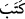

merhamet etmeyi kendisine yazdı. Gerçek şu ki: Sizden kim, bilmeyerek bir
kötülük yapar. Sonra ardından tevbe edip de kendini ıslah ederse, bilsin ki Allah
çok bağışlayan, çok esirgeyendir.
“Âyetlerimize inananlar sana geldikleri zaman”
Rivayete göre bazı kimseler Rasûlullah (a.s.)’a gelerek dediler ki: Biz büyük
günahlar işledik. İstiğfar imkanı ve özür dileme yolu nedir? “Rasûlullah (a.s.) cevap
vermeyip sustu. Onlar da üzülerek geri döndüler. İşte bunun üzerine bu âyet nâzil oldu.
Fahreddin Râzî der ki: Allah’a îman eden herkes bu şerefe dâhildir.
“onlara de ki: “Selam size”, her türlü kötülük ve âfetten selamette olasınız.
Selam, “teslîm” yani selamette olması için duâ mânâsınadır. Buna göre “Selamün
aleyküm”, yani “Selam size” ifadesinin mânâsı: Allah, dininize ve canınıza isabet
edecek afet ve musîbetlerden sizi selamette kılsın, diye dua ediyorum, demektir.
Gelenin oturana selam vermesi âdet iken Allah Teâlâ’nın Rasûlü’ne (a.s.) önce selam
vermesini emretmesi, onları selamla karşılayarak sevindirmek ve utandırmamak içindir.
Bu, mü’minlere dünyâda olan selamdır. Âhirette ise onlara cennete girerken melekler
selam verir. Nitekim bir âyet-i kerimede şöyle buyurulmuştur: “Selam size, ne
hoşsunuz, ebedi kalmak üzere buraya girin!” (ez-Zümer, 39/73)
Allah da onlara önce selam verir ve şöyle buyurur: “Çok merhametli Rab’den
onlara sözlü selam (vardır).” (Yasin, 36/58)
“De ki: Selam size” ifadesi, Allah Teâlâ’nın Habîbi (a.s.)’a mirac gecesinde verdiği
selama işaret etmektedir. Ona: “Selam sana, ey Nebi! Allah’ın rahmeti ve bereketleri
üzerine olsun.” buyurmuştur. Rasûlullah (a.s.) da bu selamı şöyle kabul etmiştir: “Selam
bize, ve Allah’ın salih kullarına olsun.” Haksızlık yaptıktan sonra tevbe eden kimse de,
salah ehlinin arasına girer. Âyetin gelişi, bu manaya zıt değildir.
“Rabbiniz merhamet etmeyi kendisine yazdı.” Lütuf ve ihsanından dolayı merhameti
mukaddes zatına gerekli kılmış ve böyle hükmetmiştir.
Şeyhzâde der ki: “__WORD__” kelimesi, gereklilik ifade eder. “__WORD__” fiili ile birlikte
zikredilince gereklilik mânâsı kuvvetlenir. Ancak bu Allah Teâlâ’nın fail-i muhtar; yani
istediğini istediği gibi yapan oluşuna ters değildir. Bilakis Allah’ın lütuf ve keremini
beyan ve tekitten ibârettir.
et-Te’vîlâtü’n-necmiyye’de şöyle denilmiştir: Bir hadîs-i rabbânîde Allah Teâlâ,
cennete şöyle buyurur: “Sen, benim ancak rahmetimsin; seninle kullarımdan
dilediğime rahmet ederim.”[112] Dilediği kullarına cennetiyle, dilediği kullarına da
zatıyla rahmet eder.
“Sizden kim, bilmeyerek bir kötülük yapar da” cümlesi önceki cümlede geçen
“merhamet”in bedeli (karşılığı)dır. “Rabbiniz kendisine yazdı ki sizden kim bilmeyerek
bir kötülük yapar da...” demektir. Bu cümlenin muhtevâsı, onun bir rahmet olmasıdır.
“bilmeyerek” Gerçekten bilmeyerek başına gelecek zarar ve cezanın farkında
olmadan onu yaparsa, demektir. Ya da sonucunun kötü olduğunu bildiği halde hükmen